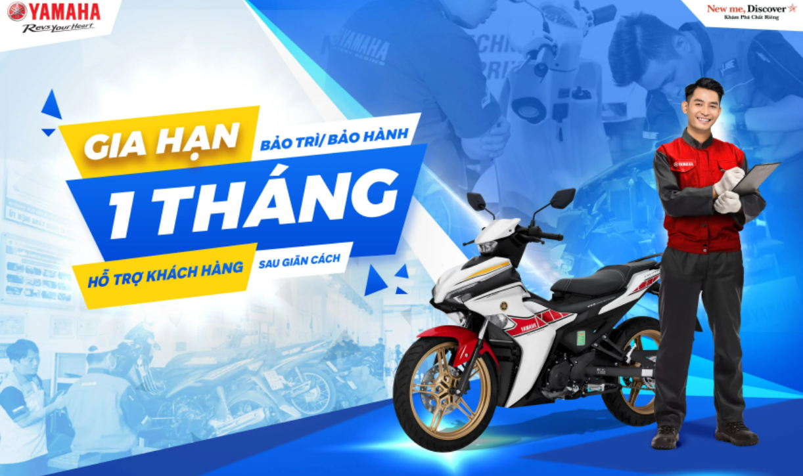

Tất cả các loại xe gắn máy Yamaha mới do Yamaha Motor Việt Nam sản xuất, được mua từ các Đại lý do Yamaha ủy nhiệm đều được đăng ký bảo hành và cấp sổ bảo hành để hưởng dịch vụ bảo hành (điều chỉnh hay thay thế miễn phí bất kỳ chi tiết nào bị hư hỏng do lỗi của nhà sản xuất – không bao gồm những điều ngoài phạm vi bảo hành nêu ở mục dưới đây) trong thời gian quy định. Thời hạn bảo hành là ba (3) năm hay 30.000km đầu tiên, tùy theo điều kiện nào đến trước (*)
– Nếu khách hàng sử dụng đầy đủ & đúng thời gian quy định trên mỗi phiếu của 03 phiếu miễn phí đầu tiên (phiếu số 1 đến số 3) tại đại lý do Yamaha ủy nhiệm sẽ được gia hạn thêm 01 năm hoặc 10.000km bảo hành, tổng
thời gian bảo hành là 2 năm hoặc 20.000km, tùy theo điều kiện nào đến trước.
– Nếu khách hàng sử dụng đầy đủ & đúng 03 phiếu bảo dưỡng miễn phí đầu tiên, tiếp tục sử dụng đủ & đúng 03 phiếu của năm thứ
2 (phiếu số 4 đến số 6) tại đại lý do Yamaha ủy nhiệm sẽ được gia hạn thêm 1 năm hoặc 10.000km bảo hành nữa, tổng thời gian bảo hành là 03 năm hoặc 30.000km, tùy theo điều kiện nào đến trước.
Tham khảo thêm
hình minh họa dưới đây:
– Để đảm bảo quyền lợi được hưởng chế độ Bảo hành của nhà sản xuất, Yamaha Motor Việt Nam khuyến cáo, khách hàng nên lựa chọn mua xe tại đại lý ủy quyền của Yamaha trên toàn quốc. Đại lý ủy quyền của Yamaha phải bàn
giao số bảo hành và đăng ký bảo hành cho xe trước khi giao xe mới cho khách hàng.
– Quý khách hàng có thể tải ứng dụng My Yamaha trên CH Play (Android) hoặc App store (iOs) để tự đăng ký bảo hành cho xe.
– Trong suốt giai đoạn được hưởng dịch vụ bảo hành, khách hàng có quyền mang xe đến bất kỳ đại lý ủy nhiệm nào của YAMAHA để sử dụng dịch vụ này (Nội dung của dịch vụ như nêu ở phần trên).
– Nếu có những nghi
vấn về sự hỏng hóc cần bảo hành, khách hàng phải mang xe đến đại lý ủy nhiệm của YAMAHA trong vòng 03 ngày kể từ khi phát hiện ra hiện tượng hư hỏng.
– Khách hàng phải bảo dưỡng và sử dụng xe đúng cách, phải
tuân thủ theo những hướng dẫn và những lời khuyên nêu trong “Sách hướng dẫn sử dụng xe”.
– Khách hàng vẫn có quyền sử dụng phiếu bảo dưỡng miễn phí đến hết năm thứ 3 cho dù đã bỏ qua các phiếu bảo dưỡng trước
đó và thời hạn bảo hành của xe đã hết hiệu lực.
* CHÍNH SÁCH BẢO HÀNH ĐẶC BIỆT
Quý khách hàng thân mến!
Nhằm quảng bá và khẳng định chất lượng vượt trội của bộ chi tiết xilanh và piston DiASil, nhờ ứng dụng bí quyết công nghệ độc đáo của Yamaha đó là:
Công nghệ đúc hợp kim nhôm silicon
“DiASil” và công nghệ piston nhôm dập nóng. Công ty TNHH Yamaha Motor Việt Nam xin trân trọng thông báo đến Quý khách hàng về chính sách bảo hành đặc biệt đối với bộ xilanh và piston DiASil như sau:
1. Thời
hạn bảo hành đối với bộ xilanh và piston DiASil là sáu mươi (60) tháng/(5 năm) hoặc 50.000 km, tùy theo điều kiện nào đến trước.
2. Chỉ bộ xilanh và piston DiASil được bảo hành theo thời hạn trên khi nguyên
nhân chính của hư hỏng trực tiếp do xilanh và piston gây ra .
3. Bộ xilanh và piston DiASil sẽ không được bảo hành theo thời hạn trên nếu:
– Nguyên nhân chính của hư hỏng bộ xilanh và piston DiASil là do
chi tiết khác gây ra, kể cả do xéc măng (bạc), ví dụ như: lọc gió bẩn hay hư hỏng, hệ thống làm mát bị hư hỏng, hệ thống bôi trơn bị hư hỏng, dùng sai loại bugi, do xupap gây ra, …
– Lỗi do việc sử dụng xe không
đúng mục đích thiết kế, không đúng hướng dẫn sử dụng,ví dụ: đi vào chỗ nước ngập sâu và nước lọt vào động cơ,dùng xăng hay dầu nhớt bị pha chế phụ gia không phù hợp,
– Lỗi do việc bảo trì, bảo dưỡng không đúng,
ví dụ: lâu không thay nhớt, thiếu nhớt, …
– Do chế tác, sửa đổi hoặc lắp ráp các phụ tùng liên quan không chính hiệu Yamaha.
– Do lưu kho hay vận chuyển không đúng.
– Do thiên tai, hỏa hoạn hay tai nạn
4. Chính sách bảo hành đặc biệt này cũng áp dụng cho tất cả các xe Exciter và Nouvo 135 đã bán trước đây. Thời hạn bảo hành còn lại đối với bộ xilanh pistion của những xe đã bán là hiệu số của 60 tháng trừ đi số
tháng chiếc xe đã sử dụng tính từ thời điểm xe được bán.
Rất mong nhận được sự hài lòng và tin tưởng của Quý khách hàng với sản phẩm và dịch vụ của Yamaha.
5. Những chi tiết và hạng mục không bảo hành:
| MỤC | Tên chi tiết | Dạng hư hỏng |
|---|---|---|
| ĐÔNG CƠ XE | Những lỗi lặt vật | Hư hỏng theo thời gian hoặc tháo lắp để bảo dưỡng thông thường. |
| Lọc xăng | Tắc do bụi bẩn, hoặc không sử dụng trong thời gian dài. | |
| Các chi tiết bộ ly hợp | Mòn theo thời gian hoặc vận hành sai. | |
| Bugi | Điện cực mòn theo thời gian sử dụng, biến dạng, vỡ sứ cách điện. | |
| Lọc gió | Tắc, hư hỏng theo thời gian sử dụng hoặc bảo dưỡng thông thường. | |
| Các ống nối | Lão hóa theo thời gian sử dụng. | |
| Hệ thống điện | Bóng đèn các loại | Hư hỏng theo thời gian sử dụng. |
| Chổi tdan, cổ góp mô tơ đề | Hao mòn theo thời gian. | |
| Cầu chì, pin chìa khóa | Hư hỏng theo thời gian hoặc đấu nối thêm phụ kiện không chính hãng Yamaha. | |
| Bộ sạc, bộ phát điện | Đấu nối thêm hoặc sử dụng thiết bị, phụ tùng không chính hãng Yamaha Motor Việt Nam. | |
| Các chi tiết điện khác | ||
| Khung sườn | Má phanh, đĩa phanh | Mòn theo thời gian, hư hỏng do tác động bên ngoài. |
| Nhông, xích tải | Mòn theo thời gian. | |
| Các chi tiết xi mạ | Đổi màu hoặc gỉ sét, rộp do hóa chất. | |
| Các chi tiết sơn. | Phai màu theo thời gian, điều kiện khắc nghiệt, Rộp do hóa chất. | |
| Các chi tiết cao su, nhựa. | Nứt, vỡ do tác động từ bên ngoài hoặc hóa chất. | |
| Những mục khác | Việc bảo dưỡng thông thường, dầu, mỡ, hóa chất các loại. | |
| Những hư hỏng do sửa chữa ở cửa hàng không phải do Yamaha ủy nhiệm. | ||
| Những hư hỏng do sử dụng xe không đúng với mục đích thiết kế ban đầu. | ||
| Những thiệt hại do thiên tai, hỏa hoạn hay tai nạn. | ||
| Những thiệt hại do lưu kho hay vận chuyển không đúng cách. | ||
| Hư hỏng liên quan đến chế tác, lắp đặt các phụ kiện không chính hãng Yamaha. | ||
| Những hư hỏng do sử dụng dụng cụ để tháo, lắp, bảo dưỡng không thích hợp. | ||
| Trong phạm vi pháp luật cho phép Yamaha Việt Nam từ chối trách nhiệm cho việc mất thời gian cũng như các chi phí cho việc liên lạc, vận chuyển, ăn ở trong quá trình sửa chữa xe tại các trung tâm bảo hành. | ||
| * Một số phụ tùng sẽ bảo hành theo cụm (mô tơ đề, van tiết lưu, giảm xóc, cụm trục khuỷu, bơm xăng, đồng hồ) Công ty Yamaha sẽ từ chối bảo hành nếu phát hiện có dấu hiệu tháo hoặc điều chỉnh trước đó. | ||
Khách hàng sử dụng xe gắn máy do Yamaha Motor Việt Nam sản xuất, mua từ Đại lý do Yamaha ủy nhiệm, được đăng ký bảo hành và cấp sổ bảo hành hoặc tải ứng dụng My Yamaha trên App store (iOs) hoặc CH Play (Android) để hưởng dịch vụ bảo hành. Khách hàng hãy làm theo các bước sau đây để có thể nhận được dịch vụ bảo hành của Yamaha Motor Việt Nam tại các đại lý ủy quyền của Yamaha.
1. Sổ bảo hành có hiệu lực khi đại lý nơi khách hàng mua xe điền đầy đủ thông tin yêu cầu trong “Phiếu đăng ký bảo hành xe gắn máy Yamaha” và có dấu xác nhận của đại lý hoặc có đầy đủ thông tin đăng ký bảo hành của xe quý khách hàng đã mua trên ứng dụng My Yamaha.
2. Trong vòng 36 tháng hoặc 30.000 km đầu tiên (tùy theo điều kiện nào đến trước), nếu chiếc xe Yamaha của khách hàng bị hư hỏng do lỗi của nhà sản xuất (không bao gồm những mục nằm ngoài phạm vi bảo hành được nêu ở trên), khách hàng có thể mang xe tới bất kỳ đại lý ủy quyền hoặc trạm bảo hành của Yamaha trên toàn quốc để được hưởng dịch vụ bảo hành.
3. Khi mang xe tới bảo hành tại Đại lý ủy nhiệm bất kỳ của YAMAHA, khách hàng phải xuất trình sổ bảo hành hoặc thông tin bảo hành của xe trên ứng dụng My Yamaha.
4. Sau khi khách hàng mô tả tình trạng của xe, nhân viên kỹ thuật của đại lý sẽ tiến hành kiểm tra sơ bộ, đánh giá và quyết định chi tiết hư hỏng của chiếc xe có phải nguyên nhân từ nhà sản xuất hay không. – Nếu chiếc xe bị hư hỏng không phải do lỗi của nhà sản xuất, yêu cầu bảo hành của khách hàng sẽ không được chấp nhận. Trong trường hợp này, nếu muốn sửa chữa hay thay thế linh kiện hư hỏng của chiếc xe, khách hàng sẽ phải thanh toán đầy đủ tiền công sửa chữa và tiền phụ tùng tại đại lý. – Nếu chiếc xe bị hư hỏng do lỗi của nhà sản xuất, yêu cầu bảo hành của khách hàng sẽ được chấp nhận. Trong trường hợp này, đại lý sẽ tiến hành sửa chữa hoặc thay thế (nếu cần thiết) phụ tùng hư hỏng của chiếc xe, và khách hàng không phải trả bất kỳ một khoản chi phí nào cho việc sửa chữa cũng như phụ tùng thay thế. Phụ tùng hư hỏng sẽ được đại lý giữ lại để gửi lên Công ty TNHH Yamaha Motor Việt Nam xem xét và nghiên cứu.
Sổ bảo hành và ứng dụng My Yamaha là căn cứ để khách hàng sử dụng quyền lợi về dịch vụ sau bán hàng đối với chiếc xe của mình: Dịch vụ bảo hành. / Dịch vụ bảo dưỡng định kỳ miễn phí. / Các chương trình khuyến mại, chăm sóc khách hàng, … Để đảm bảo các khách hàng có thể sử dụng quyền lợi dịch vụ trên tại bất cứ trạm dịch vụ uỷ quyền nào của Yamaha trên toàn quốc, khi giao xe Yamaha mới cho khách, các đại lý ủy quyền của Yamaha phải đăng ký và cấp sổ bảo hành thật do Công ty TNHH Yamaha Motor Việt Nam Yamaha Motor cấp kèm theo xe hoặc khách hàng có thể tự mình tải ứng dụng My Yamaha trên CH Play (Android) và App store (iOs) để đăng ký bảo hành cho xe.
Lưu ý : Nếu khách hàng không nhận được sổ bảo hành có đủ các phiếu bảo dưỡng định kỳ miễn phí hoặc sổ bảo hành không phải do Yamaha cung cấp kèm theo xe (tham khảo mẫu sổ bảo hành và các phiếu bảo dưỡng miễn phí ở phần sau) hoặc thông tin xe trên ứng dụng My Yamaha không đầy đủ thì khách hàng sẽ bị mất quyền sử dụng các dịch vụ Bảo hành và bảo dưỡng định kỳ miễn phí. Vì quyền lợi chính đáng của mình, mỗi khách hàng hãy cùng với Công ty TNHH Yamaha Motor Việt Nam Yamaha bảo vệ quyền lợi của người tiêu dùng bằng cách chủ động yêu cầu đại lý bán xe đăng ký và cung cấp sổ bảo hành thật hoặc tải ngay ứng dụng My Yamaha và đăng ký thông tin xe ngy từ khi mua xe.
Sổ bảo hành chỉ được cấp một lần duy nhất.
Trong sổ bảo hành cấp cho khách hàng có chín (09) phiếu bảo dưỡng định kì trong sổ bảo hành hoặc trên ứng dụng My Yamaha để sử dụng dịch vụ này.
Phiếu bảo dưỡng miễn phí được chia làm ba loại với thời hạn sử dụng và nội dung khác nhau.
Loại “Phiếu bảo dưỡng cấp độ 1” có một (01) phiếu;
Loại “Phiếu bảo dưỡng cấp độ 2” có năm (05) phiếu;
Loại “Phiếu bảo dưỡng cấp độ 3” có ba (03) phiếu.
– Phiếu số 1: Sử dụng trong vòng 4 tháng đầu tiên.
– Phiếu số 2: Sử dụng từ tháng thứ năm đến tháng thứ mười
– Phiếu số 3: Sử dụng từ tháng thứ mười một đến tháng thứ mười bốn.
– Phiếu số 4: Sử dụng từ tháng
thứ mười lăm đến tháng thứ mười tám.
– Phiếu số 5: Sử dụng từ tháng thứ mười chín đến tháng thứ hai mươi hai.
– Phiếu số 6: Sử dụng từ tháng thứ hai mươi ba đến tháng thứ hai mươi sáu.
– Phiếu số 7: Sử dụng
từ tháng thứ hai bảy đến tháng thứ ba mươi.
– Phiếu số 8: Sử dụng từ tháng thứ ba mươi mốt đến tháng thứ ba mươi tư.
– Phiếu số 9: Sử dụng từ tháng thứ ba lăm đến tháng thứ ba tám.